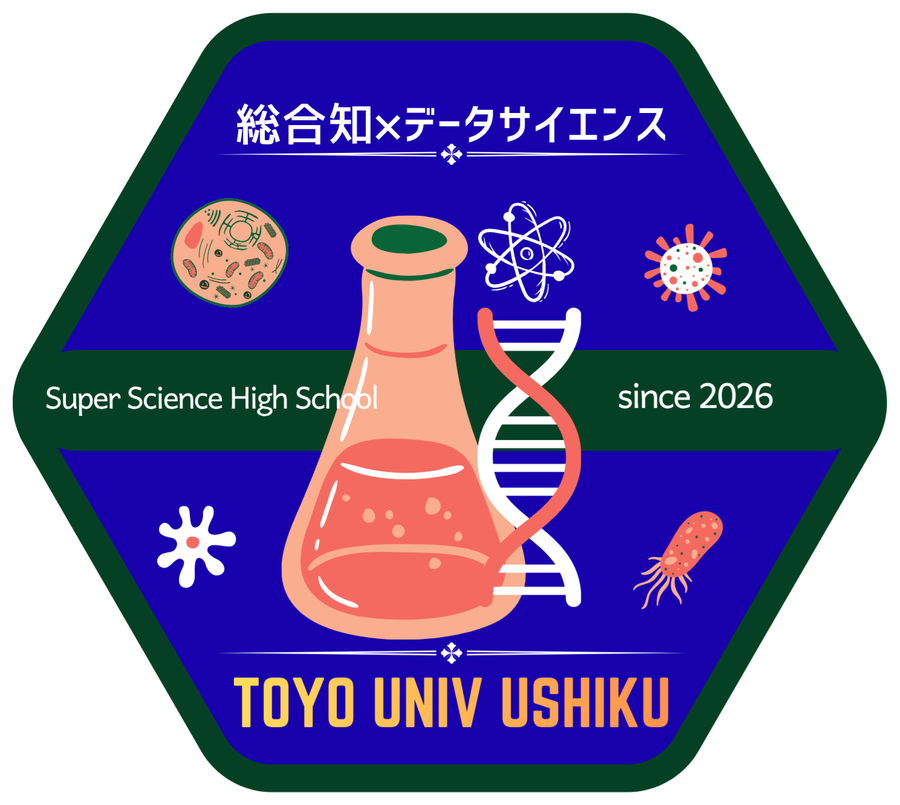
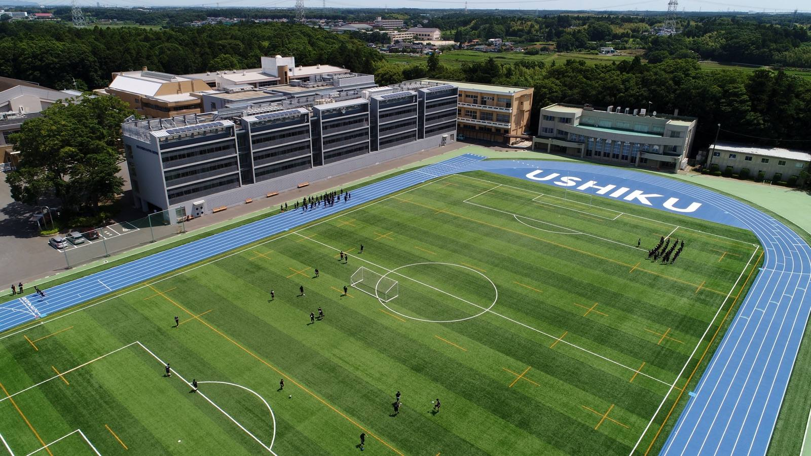
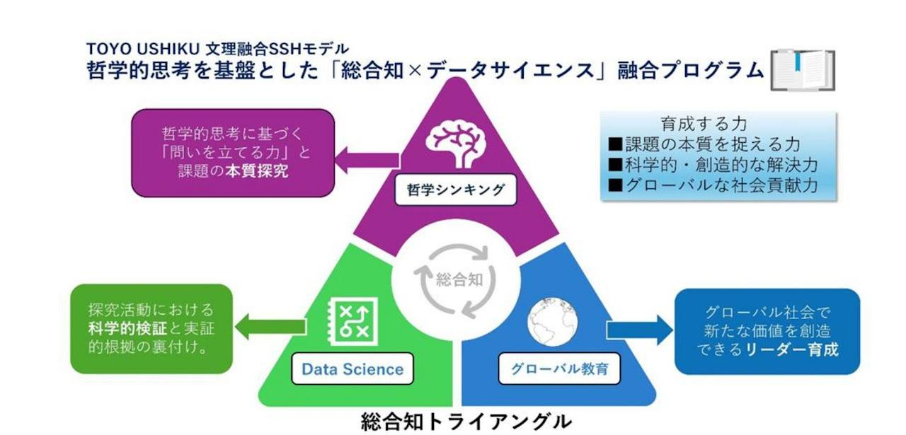

CONTENTS
立場を選ぶと、関係の深いページが明るく表示されます。
ANNOUNCEMENT
本校の研究課題は「哲学的思考を基盤とした『総合知×データサイエンス』融合プログラムの開発」です。
東洋大学の伝統である「哲学」を教育の核に据え、全校で「哲学シンキング」を展開。本質的な問いを立てる力を磨きます。そこに最新の「データサイエンス」を掛け合わせ、ICTやAIを駆使した客観的な実証力を身につけます。
さらに地域課題の解決やグローバルな発信を通じ、文理の枠を超えて未来を切り拓く「総合知」を備えた人材を育成します。科学と哲学の対話から、新しい価値を創造する学びがここから始まります。

CONCEPT — 研究主題
哲学的思考を基盤とした
「総合知 × データサイエンス」
融合プログラムの開発
東洋大学の「総合知」を核に、吉田幸司氏提唱の哲学シンキングとデータ・ＡＩ活用を融合した文理融合プログラムを展開し、生徒の問いを立てる力と科学的解決能力を育成する。
これにより、人文社会科学的テーマを科学的視点で深く「読み解く力」を養い、地域から地球規模の課題解決に挑戦し、未来を切り拓く人材を育成する。

MESSAGE
なぜ、なぜ、なぜ。
２０２６年度から５年間、本校は、文部科学省より「スーパーサイエンス・ハイスクール（文理融合基礎枠）」の指定を受けました。
研究主題は「哲学的思考を基盤とした『総合知×データサイエンス』融合プログラムの開発」です。これからの「生成AI時代」を生き抜くことが私たちに問われています。このために、デジタル技術を使いこなして、全ての生徒が「なぜ、なぜ、なぜ」の哲学教育を基礎に探究する姿勢を育み、学びの最適解を探る手法として、「問いを立てる力」を育てていきます。
「スーパーサイエンス・ハイスクール」といっても、本校が理系に特化・専門になったわけではなく、文理融合型のSSHですから、文系からの疑問を理系が解き明かす、あるいは理系から出てきた結果を文系が総合して解答をまとめ、思考を展開することが重要です。様々な入口はあります。「なぜ、なぜ、なぜ」からどのような思考を展開していくかが問われています。